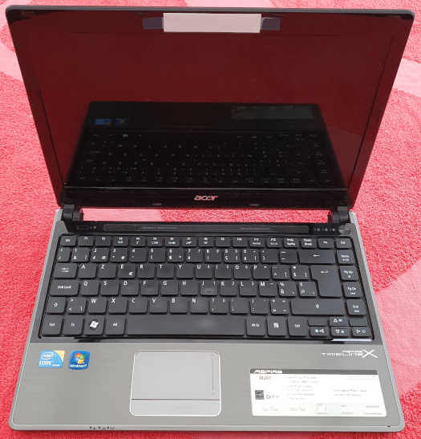
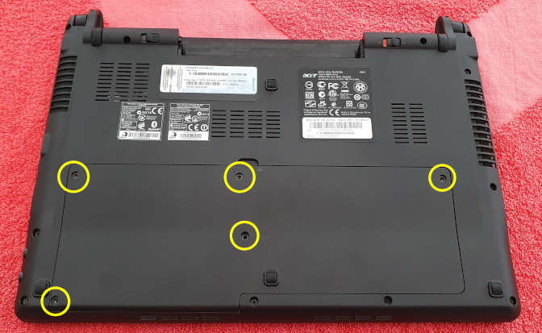
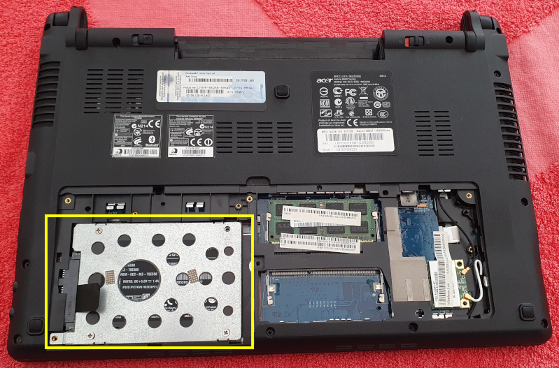
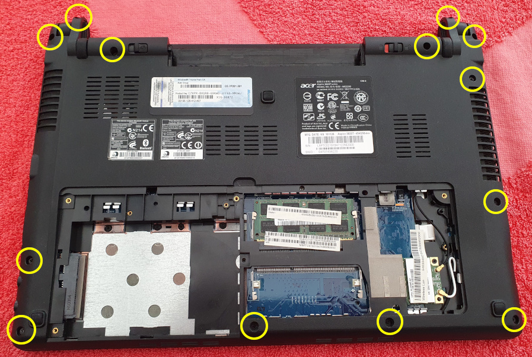
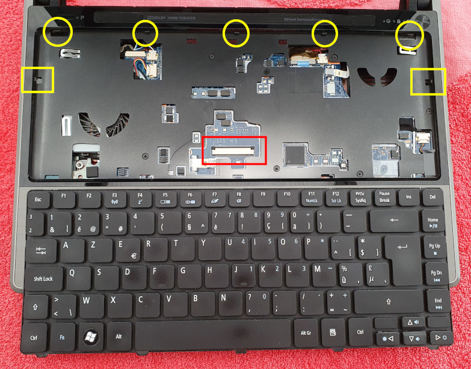
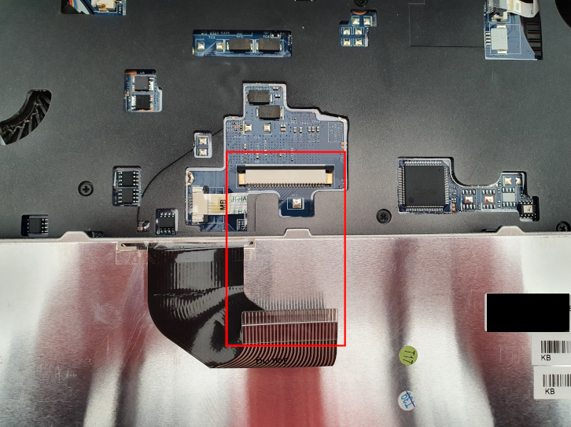
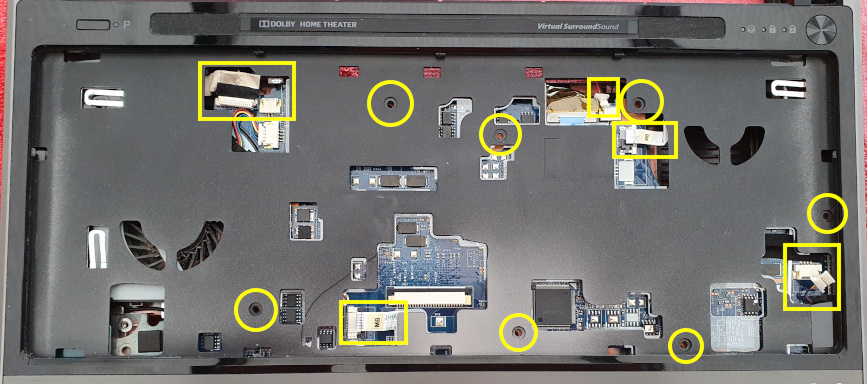
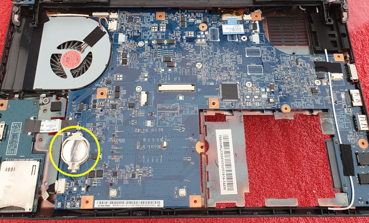

Replace CMOS Battery From Acer Aspire 3820T Laptop
Replacing the CMOS battery of some laptops can take quite a bit of work. In this article I describe the steps I had to take for my very old Acer Aspire 3820T laptop.
I could have written this text mainly in a local document for myself when I need to replace the CMOS battery again. But by putting on my personal site it may help other people as well, which is a double win for me. I still have the information for future reference and others have the steps readily available for them.

Steps To Take
First, turn the laptop upside down and remove the screws of the compartment that houses the disk drive, memory chips and the Wi-Fi chip. On the picture, yellow circles indicate the location of the screws. Oh, and don't forget to remove the laptop's battery too!

Next, remove the hard drive. Strictly speaking it is not really necessary but I advise to this anyway. It can prevent damaging the drive or even the connector later on when you have to open the laptop housing itself.
The YouTube videos below remove the memory chip and the Wi-Fi chip as well. If you only want to replace the CMOS battery, there is no need to do that.

The last thing to do before turning over the laptop again, is removing all screws on the bottom. Make sure you don't forget any of them. Especially the 2 top screws closing the hinges are easy to overlook.

Turn over the laptop and take out the keyboard. Press open the 5 locks (= yellow circles) at the top of the keyboard.
A small warning though. The keyboard is still connected to the laptop, even after unlocking it. Be careful to avoid damaging the strip. See the red squares.


The last step: remove the screws (= yellow circles), disconnect several connectors (= yellow squares), and open up the housing.

And there you have it, the CMOS battery.
